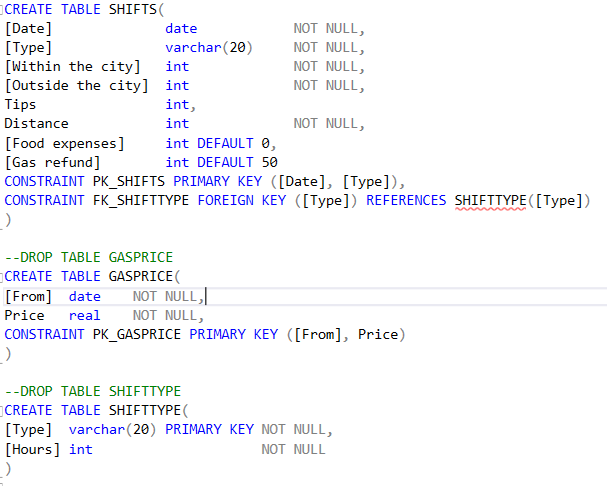
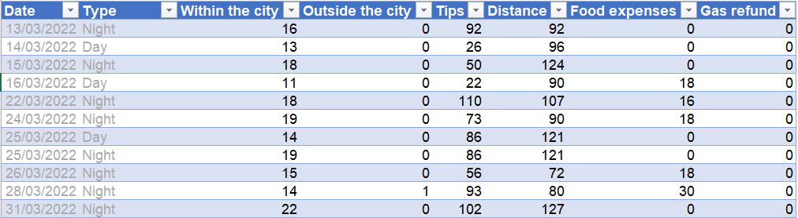
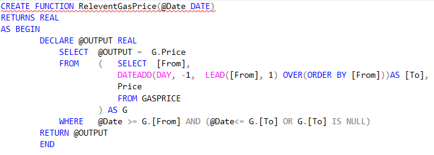
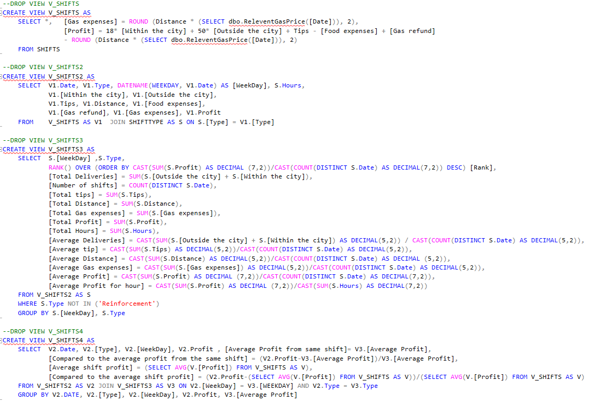
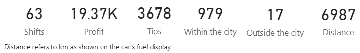
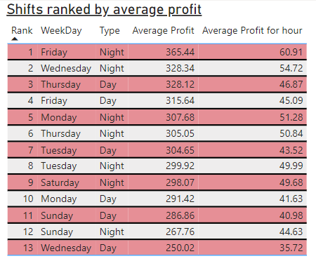
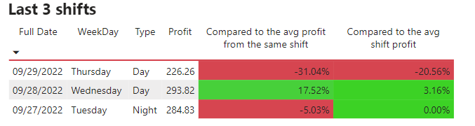
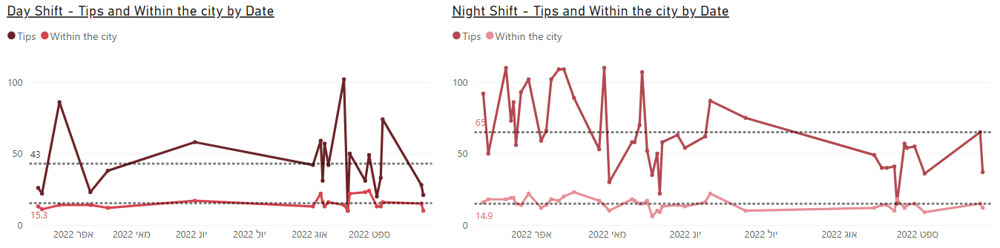

Background:
The Agadir Beer Sheva restaurant employs two types of couriers:1. Couriers who receive a fixed hourly wage and make the deliveries on the restaurant's mopeds.
2. Freelancers - couriers who are paid according to the amount of deliveries they make, 18 NIS for delivery within the city of Beer Sheva (including Omar) and 50 NIS for delivery outside the city (Lahavim, Mitar, Carmit, Haters). These couriers make the deliveries on their own vehicle and the fuel expenses on their basis.
Starting in August, there is a fuel refund of 50 NIS for each shift.
In addition, the restaurant also works with Wolt and 10Bis.
The day shift is 7 hours long (12:00-19:00) and the night shift is 6 hours long (19:00-01:00).
The Tables:
I started by creating the tables for gas price, shift type and shifts.SHIFTS - the full shift's data
GASPRICE - the updating gas price for 1 liter
SHIFTSTYPE - Day/Night with the suitable hours

I entered the data from the excel that i used to track my profits with to the tables

Function:
For the gas prices table I calculated the price for 1 km by checking what is the size of my car's fuel tank, then mulitply it by the cost for 1 liter and divide by the number of km shown on my fuel display. I wrote a function who recives a date and returns the relevent gas expense for 1 km. The FROM table in the function is created by using the window function LEAD, that way I can only insert the date were the gas price updated instead of start and end date for each specific cost.
VIEWS:
V_SHIFTS - calculating the gas cost using the function, show data for every shift.V_SHIFTS2 - same as V_SHIFTS + the weekday and hours.
V_SHIFTS3 - data grouped by weekday and type.
V_SHIFTS4 - comparing each shift to the profit from the same weekday and type and to the average overall shifts.

The Dashboard:
All parts of the dashboard are updated with new data entry and all of them (except the shift rating table) can be filtered using a date range.1. Using the Power BI cards i set some indicators that helps see my overall progress and profit. They are important in a monthly view and in a single shift view as well.

2. The following table shows the different shifts ranked by profit and helps me decide which shifts to work according to the different constraints I have that week.

3. The following table shows a comparison between the shifts and the corresponding shift by weekday & type and also shows a comparison to the overall average shift. In this way I get a perspective on my last shifts and my last week since I work an average of about 3 shifts a week.

4. The following two graphs show the amount of within the city deliveries (deliveries outside the city are few and random) and the tip I received in each shift divided into the day shift (left) and the night shift (right). In addition, the average of each category is presented. With the help of the graphs it is easier to identify trends in these categories.

Conclusions:
1. The Friday night shift is the most profitable by far.A conclusion that can lead to a change in my motivation to work these shifts.
2. On average, the amount of deliveries within the city is quite the same between the day shift and the night shift (15.3 during the day versus 14.9 at night).
Despite the widespread stigma that the day shift has more deliveries because it is longer.
3. On average, the tips in the night shift are higher than the day shift (66 at night compared to 42 during the day).
This conclusion is true for all months and for each month separately. This conclusion is attributed to the fact that during the day a considerable part of the deliveries are made through Sibus and usually no tip is received for them.